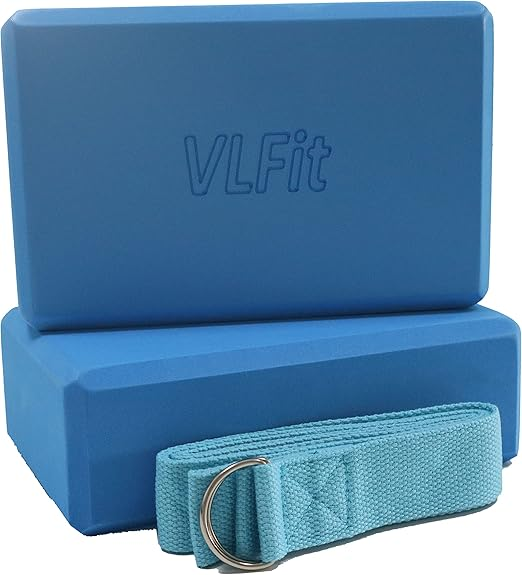
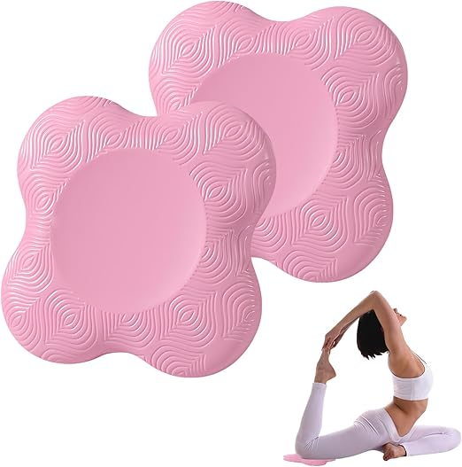

Nos essentiels yoga

Tapis de Yoga
Tapis de yoga en coton biologique, idéal pour les pratiques de yoga et de méditation.
Acheter maintenant
Sangle de yoga
Nos sangles de yoga adorent un design sécurisé et réglable avec des boucles robustes à double anneau en D. Concentrez-vous sur l'étirement sans glisser ni réajuster. Vous pouvez avoir une prise confortable.
Acheter maintenan
Brique de yoga
légers dans les sacs de sport, donc parfaits pour les voyages quotidiens au studio ou à la salle de sport et peuvent être nettoyés avec une serviette humide en raison de leur surface non absorbante.
Acheter maintenan
Coussin de yoga
notre coussin de yoga offre une protection efficace des articulations et un soulagement de la douleur pour les mains, les genoux, la tête, les coudes et le coccyx. C'est l'outil de fitness idéal pour la prévention et la récupération des blessures.
Acheter maintenant